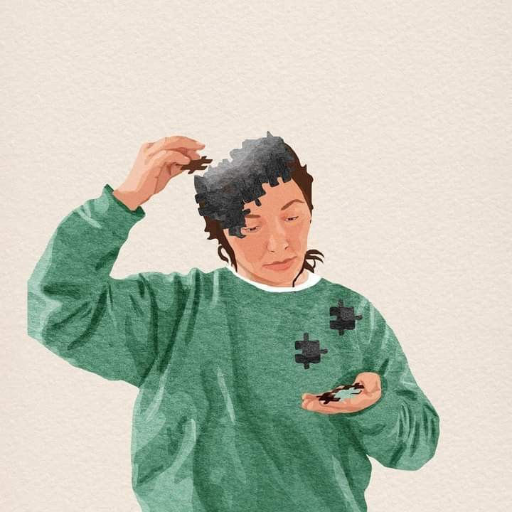

Otizm spektrum bozukluğu olan çocuklar genellikle sosyal etkileşimde ve iletişimde zorluklar yaşarlar.
Ergoterapistler, bu çocukların günlük yaşam becerilerini geliştirmeye odaklanarak, onların bağımsızlıklarını artırmaya ve yaşam kalitelerini
iyileştirmeye çalışırlar.
Dikkat Eksikliği ve Hiperaktivite Bozukluğu
DEHB'ye sahip çocuklar, dikkatlerini sürdürme, hiperaktivite ve dürtüsellik gibi belirtiler gösterebilirler.
Ergoterapistler, bu çocukların odaklanma ve organizasyon becerilerini geliştirmek, günlük rutinlerini yönetmelerine yardımcı olmak ve öz-düzenleme becerilerini artırmak için çalışırlar.
Down Sendromu
Down sendromu olan çocuklar, genellikle fiziksel özelliklerde ve bilişsel yeteneklerde belirgin farklılıklar gösterirler. Ergoterapistler, bu çocukların motor becerilerini geliştirmeye, günlük yaşam aktivitelerini öğrenmelerine ve bağımsızlıklarını artırmalarına yardımcı olurlar.
Duyusal İşlemsel Bozukluklar
Bazı çocuklar duyusal bilgiyi işleme konusunda zorluklar yaşayabilirler, bu da günlük yaşam aktivitelerini etkileyebilir.
Ergoterapistler, çocukların duyusal işleme becerilerini geliştirmeye yönelik terapiler sağlarlar ve çevrelerine uyum sağlamalarına yardımcı olurlar.
Motor Gelişim Bozuklukları
Bazı çocuklar motor gelişim bozuklukları yaşayabilir ve bu da günlük yaşam aktivitelerini etkileyebilir.
Ergoterapistler, çocukların motor becerilerini geliştirmek, hareket etmeyi ve günlük yaşam becerilerini öğrenmeyi kolaylaştırmak için egzersizler ve etkinlikler sağlarlar.
Asperger Sendromu
Asperger sendromu, otizm spektrum bozuklukları arasında yer alır ve sosyal etkileşimde zorluklar, tekrarlayıcı davranışlar ve dar ilgi alanları ile karakterizedir.
Ancak, dil gelişimi ve bilişsel yetenekler genellikle tipik seviyededir. Asperger sendromu olan bireyler genellikle belirli konularda derinlemesine bilgi sahibi olabilirler ve özel yeteneklere sahip olabilirler.
Disleksi
Disleksi, okuma, yazma ve kelimeyi anlama gibi alanlarda zorluk yaşayan bir öğrenme bozukluğudur. Disleksi olan bireyler harfleri, heceleri veya kelimeleri tanıma ve işleme konusunda güçlük çekebilirler. Bununla birlikte, disleksi olan bireyler genellikle normal veya üstün zekaya sahip olabilirler.
Serebral Palsi
Serebral palsi, beynin motor kontrolü ve hareket yeteneklerini etkileyen bir grup kalıcı hareket ve duruş bozukluğunu ifade eder. Bu durum genellikle doğum öncesi, doğum sırasında veya doğum sonrası dönemde beyin hasarı sonucu ortaya çıkar. Serebral palsi olan bireylerin hareket yetenekleri ve günlük yaşam aktivitelerini yapma becerileri genellikle kısıtlıdır.

Parkinson Hastalığı
Parkinson hastalığı, merkezi sinir sistemini etkileyen ve hareket kontrolünde bozukluklara neden olan bir nörodejeneratif hastalıktır. Bu hastalık genellikle titreme, yavaş hareketler, kas sertliği ve denge problemleri gibi belirtilerle karakterizedir. Parkinson hastalığı ilerledikçe, günlük yaşam aktivitelerini yapma yeteneği giderek azalabilir.
Kistik Fibrozis
Kistik fibrozis, bir gen mutasyonu nedeniyle oluşan kalıtsal bir hastalıktır. Bu hastalık, vücudun mukus ve sindirim sıvılarını normal şekilde üretememesine neden olur. Sonuç olarak, solunum yolları, sindirim sistemi ve diğer organlar etkilenir. Semptomlar arasında tekrarlayan solunum enfeksiyonları, sindirim sorunları ve yetersiz beslenme yer alır.
Turner Sendromu
Turner sendromu, cinsiyet kromozomlarının anormalliği sonucu ortaya çıkan bir durumdur. Turner sendromlu bireylerin cinsel karakteristikleri normal olarak gelişmez ve kısa boy, boyunun normalden kısa olması, yaygın olarak kubur veya içe dönük dirsekler gibi fiziksel özellikler sergileyebilirler.
Serebral Palsi (SP)
Serebral palsi, çocukluk döneminde oluşan bir nöromüsküler bozukluktur ve hareket ve postür kontrolünü etkiler. Fizyoterapistler, çocukların motor becerilerini geliştirmeye, kas tonusunu düzenlemeye ve günlük yaşam aktivitelerini yapmalarına yardımcı olmak için tedavi planları oluştururlar. Egzersizler, manuel terapi ve yardımcı cihazlar bu tedavi planlarının bir parçası olabilir.
Biz De Varız Arel Unıversıty Student Communıty | Bitirme Projesi

.jpeg)

.jpeg)

.jpeg)
.jpeg)
.jpeg)
.jpeg)
.jpeg)